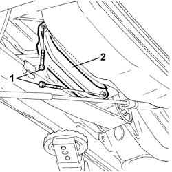
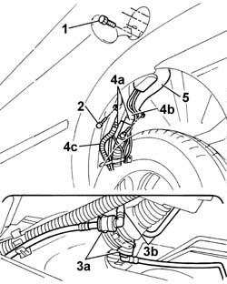
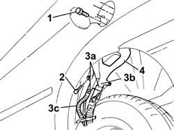
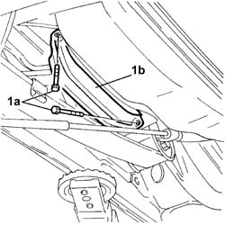
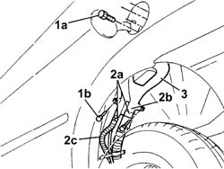

1040A31 fuel filler pipe - rigid section - r r
- Path
- Procedures > 10 ENGINE > 1040 FUEL TANK AND PIPES > 1040A FUEL TANK AND COMPONENTS > 1040A31 fuel filler pipe - rigid section - r r
- Kind
- repair procedure (removal / refitting; the operation number is the code)
- Applies to
- engines: 1.2 8v, 1.4 8v, 1.3 JTD 16V, 1.9 JTD 8V, 1.9 DIESEL; all production periods
- Interactive page
- https://sloeber94.github.io/elrnDB-fDbl/en/#/2584222
Applies to: engines: 1.2 8v, 1.4 8v; all production periods
 Removing
Removing
 Refitting
RefittingDisconnect the battery negative terminal.
Place the car on a ramp.
Raise the vehicle.
Op. 7055B43 REAR WHEEL ARCH LINER (ONE) LEFT OR RIGHT - R.R.
1. Unscrew the retaining bolts
2. Remove the pipe protection bracket

Applies to: engines: 1.2 8v, 1.4 8v; all production periods
1. Undo the bolts fixing the fuel filler pipe fitting to the bodyshell.
2. Undo the two bolts fixing the filler pipe to the bodyshell.
3. Disconnect the antievaporation pipes (3b) from the rapid connectors (3a)
4. Open the band (4a) and disconnect the rigid section of the fuel filler pipe (4b) and the reflux pipe (4c).
Release the anti-evaporation pipes from the plastic retaining bands.
5. Remove the rigid section of the fuel filler pipe.

Applies to: engines: 1.2 8v, 1.4 8v; all production periods
Refitting
RemovingPosition the rigid section of the fuel filler pipe.
Connect the rigid section of the fuel filler pipe to the reflux pipe using new bands.
Connect the anti-evaporation pipes to the rapid connectors.
Tighten the bolts fixing the filler pipe to the bodyshell.
Tighten bolts fixing the fuel filler to the bodyshell.
Fit the pipe protection bracket and tighten the fixing bolts.
Op. 7055B43 REAR WHEEL ARCH LINER (ONE) LEFT OR RIGHT - R.R.
Lower the vehicle.
Remove the vehicle from the ramp.
Connect the battery negative terminal.
Applies to: engines: 1.9 DIESEL; all production periods
Removing
RefittingDisconnect the battery negative terminal.
Place the car on a ramp.
Raise the vehicle.
Op. 7055B43 REAR WHEEL ARCH LINER (ONE) LEFT OR RIGHT - R.R.
1. Unscrew the retaining bolts
2. Remove the pipe protection bracket
Applies to: engines: 1.9 DIESEL; all production periods
1. Undo the bolts fixing the fuel filler pipe fitting to the bodyshell.
2. Undo the two bolts fixing the filler pipe to the bodyshell.
3. Open bands (3a) and disconnect the rigid section of the fuel filler pipe (3b) and the reflux pipe (3c).
4. Remove the rigid section of the fuel filler pipe.

Applies to: engines: 1.9 DIESEL; all production periods
Refitting
RemovingPosition the rigid section of the fuel filler pipe.
Connect the rigid section of the fuel filler pipe to the reflux pipe using new bands.
Tighten the bolts fixing the filler pipe to the bodyshell.
Tighten bolts fixing the fuel filler to the bodyshell.
Fit the pipe protection bracket and tighten the fixing bolts.
Op. 7055B43 REAR WHEEL ARCH LINER (ONE) LEFT OR RIGHT - R.R.
Lower the vehicle.
Remove the vehicle from the ramp.
Connect the battery negative terminal.
Applies to: engines: 1.3 JTD 16V, 1.9 JTD 8V; all production periods
Removing
RefittingPosition the vehicle on the ramp.
Proceed with the removal
Op. 7055B43 REAR WHEEL ARCH LINER (ONE) LEFT OR RIGHT - R.R.
(Right side).
1. Undo the bolts (1a) and remove the protective bracket (1b).

Applies to: engines: 1.3 JTD 16V, 1.9 JTD 8V; all production periods
1. Undo the bolts (1a) and (1b) fixing the fuel filler pipe to the bodyshell.
2. Loosen the bands (2a) and disconnect the rigid section of the fuel filler pipe (2b) and the reflux pipe (2c).
3. Remove the rigid section of the fuel filler pipe.

Applies to: engines: 1.3 JTD 16V, 1.9 JTD 8V; all production periods
Refitting
RemovingPlace the rigid section of the fuel filler pipe back in its housing.
Connect the rigid section of the fuel filler pipe and the reflux pipe and secure them using the bands.
Tighten the bolts fixing the fuel filler pipe to the bodyshell.
Refit the protective bracket in its seating and secure it with its bolts.
Proceed with the refitting
Op. 7055B43 REAR WHEEL ARCH LINER (ONE) LEFT OR RIGHT - R.R.
(Right side).
Remove the car from the ramps.